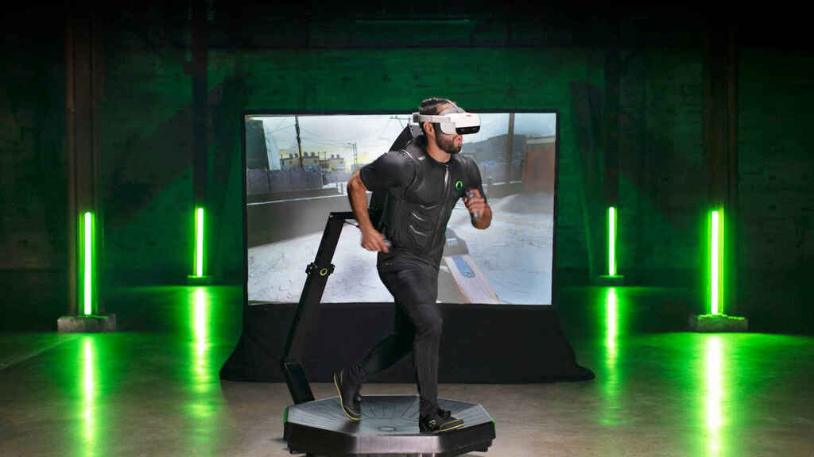
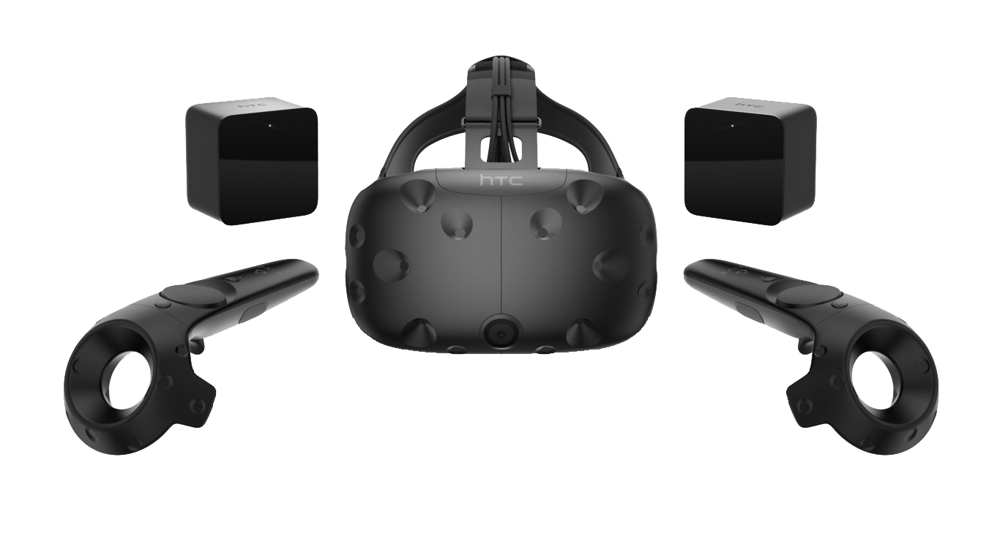
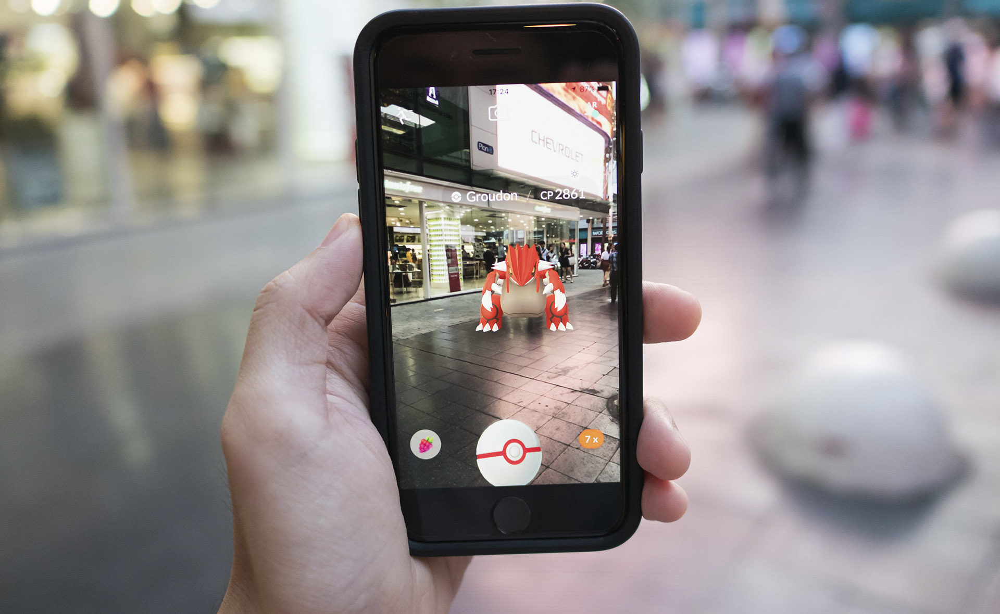
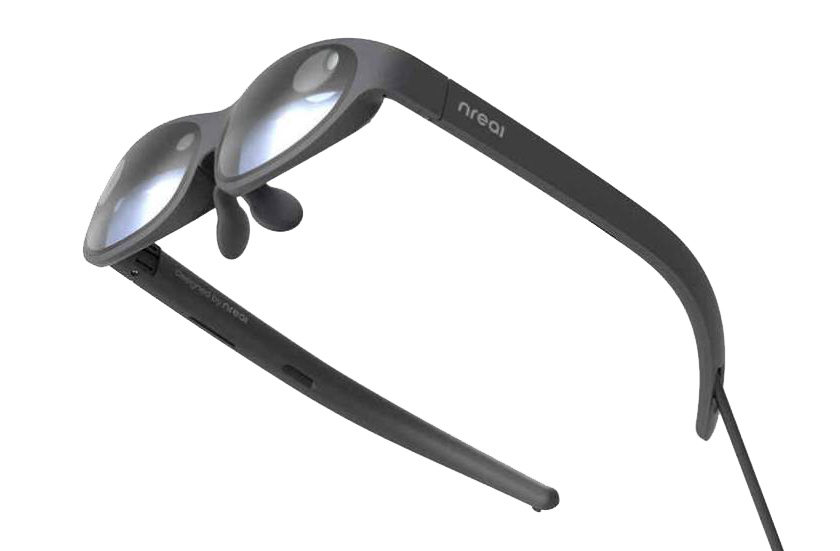
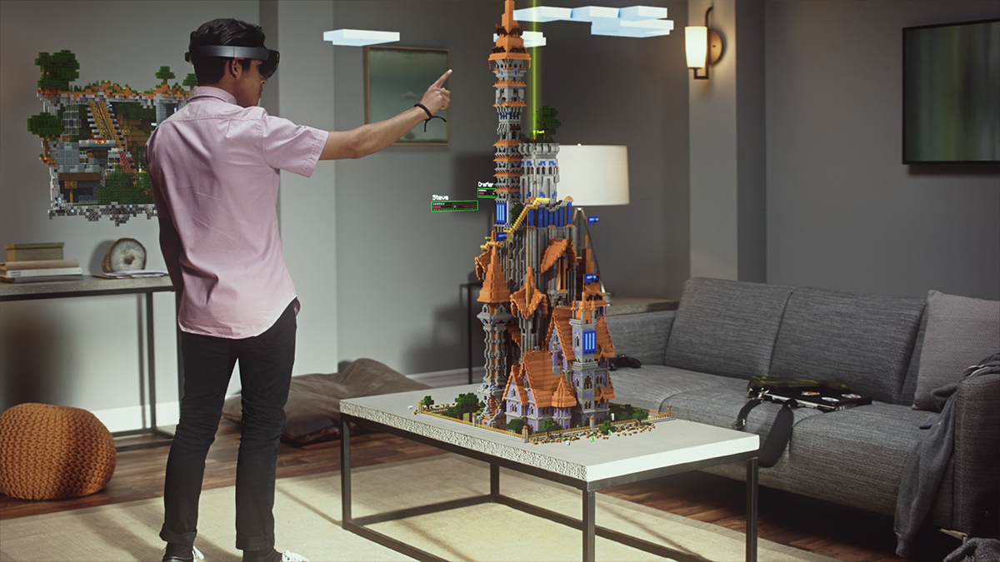
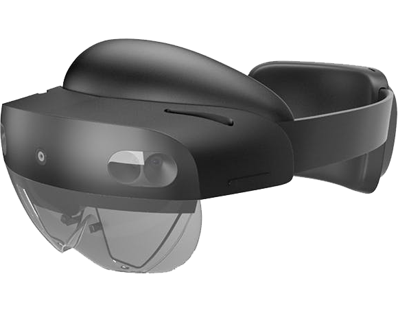

La Realidad Virtual (VR) es una tecnología que nos permite sustituir el entorno del usuario por otro generado de forma digital, una realidad alternativa, a la que se accede a través de dispositivos (como casco o gafas de realidad virtual) que aíslan al usuario de su entorno físico, bloqueando su visión y, en ocasiones, su oído, de modo en que la inmersión lo hace sumergirse en un mundo puramente virtual.

Esto nos ofrece la posibilidad de vivir todo tipo de experiencias de tal manera que el usuario las sienta como si ocurrieran en la vida real. Tiene una amplia gama de aplicaciones actualmente, y en un futuro aún más. Algunas de estas son: videojuegos, medicina, gastronomía, turismo, arquitectura, educación, arte, prototipados, entrenamientos militares entre otros.
Un componente que nos permite conectarnos a una realidad virtual es, por ejemplo, HTC Vive:

La Realidad Aumentada (AR) es una tecnología que permite superponer capas de información al mundo físico en el que nos encontramos, es decir incorporar objetos virtuales sobre un entorno real, a través de una pantalla, de objetos u otras capas de información que otorgan al usuario una mayor movilidad. Un ejemplo es "Pokemon GO", juego muy popular para dispositivos móviles.

Existen hasta unas gafas de realidad aumentada. Por ejemplo, las Nreal Light:

La Realidad Mixta (MR) es una tecnología que permite fusionar el mundo físico con el mundo digital. En otras palabras, superpone los objetos virtuales y los ancla al mundo real, creando una mayor sensación de realidad donde lo físico y lo digital sean prácticamente indistinguibles.

Podemos conectarnos a una realidad mixta a través de un dispositivo como "HoloLens 2".

Si querés entender más sobre el tema, realizamos un video que lo explica en profundidad.
La tecnología de inmersión virtual, es un gran avance en todos estos aspectos, permitiendo aprender, divertirse, o mirar ciertas cosas que de otra manera no podríamos. Considerando las grandes ventajas que da esta tecnología en cualquier área, su uso cada día se normalizará y expandirá más.
El futuro de la realidad virtual y sus variantes, es casi infinito, es un camino que solo puede avanzar, aunque tenga “altibajos”, solo seguirá avanzando, hasta volverse un estándar en cualquier industria.